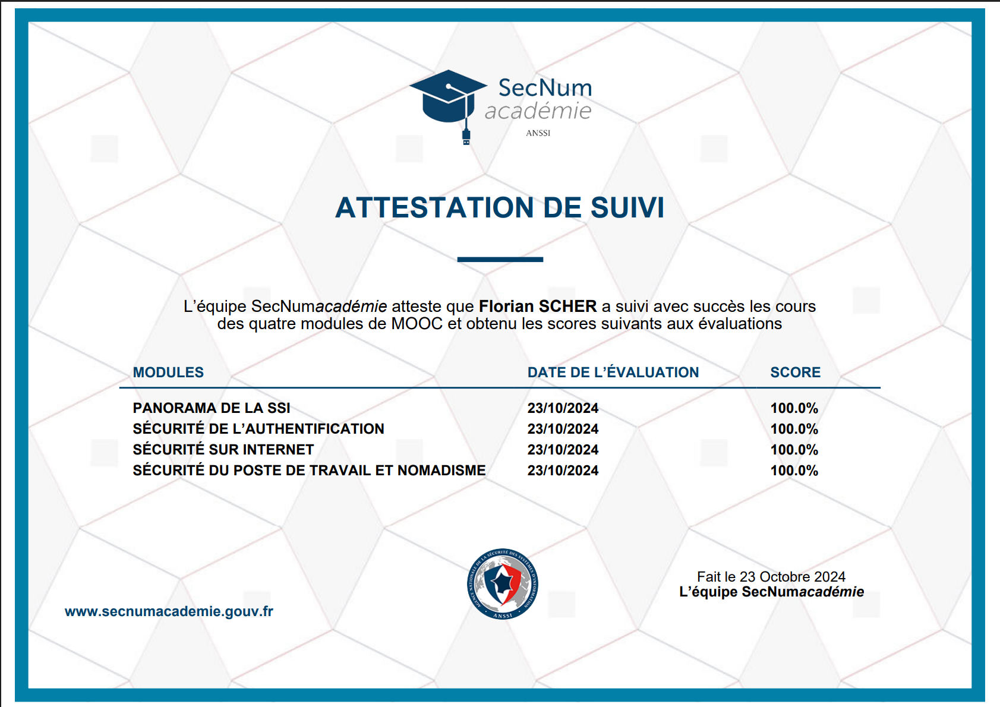

Travail de recherche sur les mots de passe utilisateurs
La SAE 1.01 vise à sensibiliser les étudiants à l'hygiène informatique et à la cybersécurité. L'objectif est d'obtenir une bonne hygiène de l'utilisation des services numériques et d'être capable de former des utilisateurs non spécialistes à ces bonnes pratiques.
Mon analyse s'est concentrée sur l'identification des fonctionnalités essentielles que doit proposer un gestionnaire de mots de passe sécurisé :
J'ai effectué une recherche approfondie des solutions disponibles sur distribution Debian, en analysant leurs caractéristiques techniques et leur niveau de sécurité :
KeePassXC utilise un chiffrement AES-256, standard de chiffrement adopté par l'armée américaine et considéré comme pratiquement impossible à casser avec les technologies actuelles. Cette robustesse cryptographique garantit la protection des données même en cas de vol du fichier de base.
Contrairement aux solutions cloud, KeePassXC stocke toutes les données localement sur l'appareil de l'utilisateur. Cette approche élimine les risques liés aux violations de serveurs distants et garantit que seul l'utilisateur a accès à ses mots de passe.
Possibilité d'utiliser un fichier clé en complément du mot de passe principal, créant une authentification à deux facteurs matérielle. Cette méthode rend l'accès aux données impossible même si le mot de passe principal est compromis.
Le code source est entièrement ouvert et régulièrement audité par des experts en sécurité mondiaux. Cette transparence garantit l'absence de portes dérobées et permet une amélioration continue de la sécurité.
Utilisation d'algorithmes avancés comme PBKDF2 et Argon2 pour la dérivation de clés, rendant les attaques par force brute extrêmement coûteuses en temps et ressources, même avec du matériel spécialisé.
Fonctionnement entièrement hors ligne, protégeant contre les attaques réseau, l'espionnage en temps réel et les tentatives d'exfiltration de données via internet.
Installation via gestionnaire de paquets :
sudo apt update && sudo apt install keepassxc
Vérification de l'installation :
keepassxc --version
J'ai suivi intégralement la formation SecNumAcadémie de l'ANSSI (Agence Nationale de la Sécurité des Systèmes d'Information), qui propose un parcours complet d'initiation à la cybersécurité : vidéos pédagogiques, présentations techniques, exercices pratiques et quiz d'évaluation.
Réussite du MOOC SecNumAcadémie avec certification officielle ANSSI
Cette certification atteste de ma compréhension des enjeux de cybersécurité et de ma capacité à appliquer les bonnes pratiques recommandées par l'autorité nationale.
Le principal obstacle a été un manque de coordination entre les membres du groupe. Bien que chacun maîtrise son sujet individuellement, nous n'avons pas suffisamment répété la présentation dans son ensemble. Cette situation a créé des difficultés lors du passage.
Je reconnais avoir contribué aux difficultés du groupe par mon manque d'initiative dans l'organisation des répétitions. Bien que ma partie technique sur KeePassXC ait été bien maîtrisée, je n'ai pas assez insisté sur l'importance de synchroniser nos interventions et de respecter le timing global.
Cette SAE m'a permis de développer une expertise solide dans un domaine fondamental de la cybersécurité. La recherche approfondie sur KeePassXC m'a fait comprendre que la sécurité informatique ne se résume pas à des concepts abstraits, mais nécessite une approche technique rigoureuse et une compréhension des mécanismes cryptographiques sous-jacents.
L'aspect le plus enrichissant fut la découverte des critères techniques qui déterminent réellement la sécurité d'un gestionnaire de mots de passe. Comprendre la différence entre le chiffrement AES-256 et les anciens standards, l'importance des algorithmes de dérivation de clés comme Argon2, et surtout les implications sécuritaires du stockage local versus cloud, m'a donné une vision claire des enjeux réels de la cybersécurité.
Le travail de vulgarisation pour rendre ces concepts accessibles à des utilisateurs non techniques s'est révélé passionnant mais exigeant. Expliquer pourquoi KeePassXC est plus sûr que les solutions cloud tout en restant compréhensible nécessite un équilibre délicat entre précision technique et simplicité pédagogique.
L'expérience de la présentation orale, bien que décevante sur le plan organisationnel, m'a enseigné l'importance cruciale de la préparation collective dans les projets de groupe. Ma contribution au manque de préparation m'a fait réaliser que la maîtrise individuelle de son sujet ne suffit pas : il faut également veiller à la cohésion et à l'efficacité du groupe dans son ensemble.
| Compétence évaluée | Niveau atteint | Justification et preuves |
|---|---|---|
| Recherche documentaire spécialisée | ⭐⭐⭐⭐⭐ | Sources ANSSI et documentation technique exploitées de manière critique |
| Analyse comparative technique | ⭐⭐⭐⭐⭐ | Comparaison objective de 5 gestionnaires basée sur critères sécuritaires précis |
| Configuration et administration | ⭐⭐⭐⭐⭐ | Installation et configuration de KeepassXC |
| Oral | ⭐⭐ | Manque de préparation |